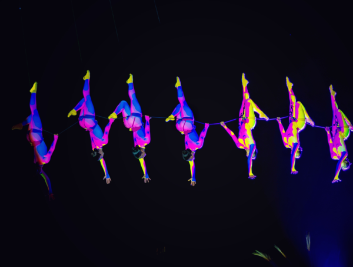

El Festival Internacional de Artes Vivas (FIAV) ha tomado por asalto la capital colombiana, transformando el asfalto en un lienzo de expresión corporal y sonora. Con la participación de compañías de los cinco continentes, el evento ha roto la cuarta pared, llevando el teatro de las salas alfombradas a los parques y barrios, celebrando la diversidad como el motor principal de la convivencia ciudadana.
El FIAV
Nace de la evolución de la tradición teatral bogotana, integrando nuevas disciplinas como el performance, la danza contemporánea y la instalación multimedia. En un contexto de post-pandemia y búsqueda de paz social, el festival se posiciona no solo como un espectáculo, sino como un ejercicio de apropiación del espacio público a través de la creatividad.

Las jornadas comienzan desde temprano con talleres de teatro comunitario, pero es al caer el sol cuando la ciudad se transforma. En la Carrera Séptima, grupos de danza aérea desafían la gravedad colgando de edificios coloniales, mientras que en las plazas del sur de la ciudad, obras experimentales exploran temas como la memoria histórica y la protección del medio ambiente a través de marionetas gigantes y coros polifónicos.
La interacción es el alma del festival. En obras como "Cuerpos en Resistencia", el público no es un espectador pasivo, sino que camina junto a los artistas, convirtiéndose en parte de la escenografía. El lenguaje es sensorial: el olor a incienso, el retumbar de los tambores y las luces de neón crean una atmósfera envolvente que hace que el arte se sienta como un pulso compartido entre miles de desconocidos.
"Bogotá no solo ve teatro, Bogotá respira arte en sus calles. El FIAV es la prueba de que cuando el espacio público se llena de cultura, no hay lugar para el miedo."
— Directora Artística del FIAV 2026.
A pesar de las lluvias ocasionales de abril, el entusiasmo no ha decaído. Los teatros tradicionales como el Colón y el Jorge Eliécer Gaitán han reportado llenos totales, mientras que las plataformas digitales de streaming cultural han permitido que personas en otras regiones del país sigan las funciones principales en tiempo real, democratizando el acceso a la alta cultura de forma inédita.
Bogotá como un nodo creativo clave en Latinoamérica
Implicaciones y perspectivas futuras El éxito del FIAV 2026 asegura su continuidad como un evento bienal que compite en prestigio con los festivales de Aviñón y Edimburgo. Esto posiciona a Bogotá como un nodo creativo clave en Latinoamérica, atrayendo inversión extranjera en la industria de las "economías naranja" y generando miles de empleos directos e indirectos en los sectores de servicios y turismo.
Se espera que tras el festival, el distrito fortalezca las redes de teatros comunitarios, utilizando la inercia del FIAV para financiar becas de creación para jóvenes artistas locales. La meta es que el impacto no dure solo los diez días del evento, sino que se convierta en una política pública de largo aliento donde la cultura sea el eje de la regeneración urbana.
Finalmente, el FIAV servirá de laboratorio para nuevas tecnologías escénicas, como el uso de realidad extendida en obras de calle, algo que ya se empezó a ver este año. El futuro de las artes vivas en Colombia se perfila como una mezcla vibrante de tecnología digital y contacto humano crudo, reafirmando que la cultura es el tejido que mantiene unida a la sociedad.